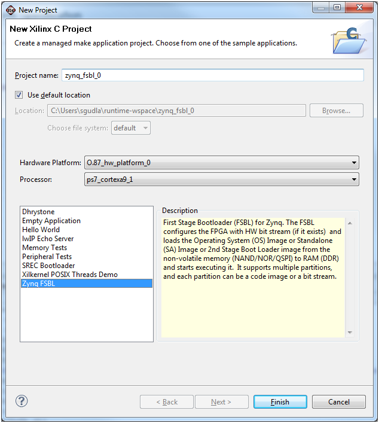

Creating software projects
Creating a Zynq FSBL project
To create a new Zynq FSBL application project for Zynq hardware platform in SDK, do the following
- Click File > New > Xilinx C Project.
- In the Project name field, type a name such as zynq_fsbl_0 for the FSBL project if you want to override the default value.
- Select the location for the FSBL project files. To use the default location that is displayed in the Location field, leave the Use default location check box selected. Otherwise, click to unselect the check box, then type or browse to the directory location.
- Select the Hardware Specification XML file if it was not specified earlier.
- From the Processor drop-down list, select the processor for which you want to build the FSBL application.
- Select Zynq FSBL from the list of templates in the Select Project Template drop-down list. A description of the platform types displays.
- Click Finish. The wizard creates a new Zynq FSBL application project.
- If Build Automatically is selected in the Project menu, the Zynq FSBL application builds automatically.

Copyright © 1995-2012 Xilinx, Inc. All rights reserved.